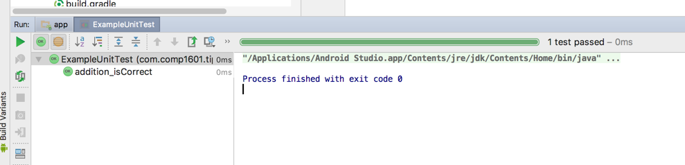

COMP 1601 Winter 2020
Tut11 -JUnit Testing
© L.D. Nel 2020
Revisions:
Description
In this tutorial we will build a java utility class to serve our next application and introduce JUnit testing which is a popular java framework for running test cases on your code.
We are starting a new project to build a Tip 'N' Tax calculator. In this tutorial we will build a utility class to do the calculations for us and test that class.
Reading:
http://www.tutorialspoint.com/junit/junit_overview.htm
and also
Note in this tutorial we will be using JUnit version 4.2 because that is what Android Studio currently uses. There is however a newer JUnit version 5 out but don't use that.
Part II of the tutorial is to make this part of the app work.
You need to demonstrate your exercise to the TA or Prof. before you leave the class to get credit for it. If you complete, or make significant progress on the exercise you will get a mark of 2. If you make some progress you will get a mark of 1 and can "upgrade" that mark to a 2 by showing your completed work within one week of this exercise. 0 marks for a no-show or unsufficient progress.
Demo Code
For this tutorial use your answer code from the previous tutorial as a starting point. It should look something like this when you run it:
Problem 1: Tip 'N' Tax Caculator
In this problem we want to build a java class that will be used to do our tip and tax calculations. In the Android project view locate the package that contains your main activity java class. Right click on the package and choose New->Java Class.
Call your class TipNTaxCalculator:
It is convention in java that class names start with a capital letter. Stick with that. Make sure visibility: is set to Public. Click OK. You should now have a new java class along with the class that represents your main activity:
TipNTaxCalculator objects will be used to do the math calculations. Start by defining static constants that will represent the default tax rate and default tip percentage and a constant that will be used to represent an invalid result (we will assume a result can never be negative.)
Add member variables that would represent the actual tax rate and actual tip percentage. We will allow TipNTaxCalculator objects to have individual rates.
Also add a default constructor that will initialize the member variables using the values of the static constants and also add a constructor that will accept a tax rate and a tip percentage. Finally, add an instance method that would take a double amount as a parameter and calculate and return the total based on the actual tax rate and tip rate:
We now have a rudimentary calculator that we should be able to start testing.
Problem 2: Running the Default ExampleUnitTest
Android Studio, and android development in general, use Java's JUnit test framework. This framework provides a way to write test cases to run against your code. There are two kinds: tests that work on isolated java components, and test that involve android components as well. We will just be testing isolated java components (our tip and tax calculator) here.
When you build an android project using one of Android Studio's wizards it will add the scafolding for JUnit tests for you. In particular, it will build a directory that mirror's your app src directory but will include test classes instead. It provides the ExampleUnitTest default test class. It also adds the dependency to your gradle build file to include JUnit testing (The view below is when you are in the Project perspective):
You could add these items manually but you should not need to. Here would be the steps:
1) Inside your module/src directory create a new folder along side src/main called src/test.
2) Inside this test directory recreate the folder structure of your main directory.
3) Place your test classes in this test directory structure.
4) Add then testImplementation 'junit:junit:4.12' to your module's build.gradle file.
But again, you should not need to do this -it should already have been done for you.
Open the ExampeUnitTest source file and look at it's contents:
The following things stand out:
1)The @Test annotation
2)The assertEquals() function invocation.
The @Test is an annotation (smart comment) that identifies the addition_isCorrect() method as a test case. The assertEquals(int a,int b) is one of JUnits assertions. If a == b then the assert succeeds but if a != b then the assertion fails. When test cases are run we can see the results including, in particular, which tests cases failed.
To run the test cases in ExampleUnitTest right click on the ExampleUnitTest class in the project explorer and choose Run 'ExampleUnitTest'
You should see the test results:

Now add another test case that would fail. Note you must put a @Test annotation before each test method:
Re-run the test and notice how one test case fails:
Problem 3: Our Own TipNTaxCalculatorUnitTest Class
Right click on the module package in the test directory to create a new test class for testing our calculator.
Create a new class TipNTaxCalculatorUnitTest and write a test method that will assert that if a negative amount is used the result will be TipNTaxCalculator.InvalidResult (Make sure to copy the import statements from the ExampleUnitTest class:

This time you will likely see a complaint (assertEquals method is striked out.) Android studio is not happy about us testing the equality of doubles. Why is that? What is wrong with comparing two double numbers?
In computer programming you should NEVER test for equality of real numbers. Examine some of the other options for assertEquals() here: https://junit.org/junit4/javadoc/latest/index.html and choose the Assert class documentation:
Notice assertEquals(double, double) was actually implemented at one time (it really should never have been implemented!). It has been deprecated and rightly so. There is however an assertEquals(double, double, double) that tests whether two double's are within a certain tolerence, or delta, of each other. This is a reasonable thing to do with reals. Use this assertEquals() method instead to program the test case:
Run this test case:
Obviously it fails because we have not yet implemented the code to handle this situtation. It does illustrate a very important programming stragegy that is often employed: that of writing test cases before the code to be tested. Remember this. It will happen often in programming projects.
Implement the actual code in TipNTaxCalculator that should handle this case:
and re-run the test case:
This time it succeeds. Next we will write the necessary test cases to thoroughly test the calculator.
Problem 4: Complete Testing of TipNTaxCalculator
Based on the above write all the required test methods (test cases) to thoroughly test the calculator. Your tests should cover at least all the following cases and any others you think are necessary. Also, of course, implement the code in TipNTaxCalculator to handle those situations. (Check the various versions of assert that might be helpful using the junit.org documenation.)
Your test cases should handle at least the following scenarios:
You should add appropriate get methods to the TipNTaxCalculator class if your test code needs, for example, to get the current tax rate.
Add any important test cases you can think of to the above list and then demostrate your code passes all of them.
Part II
Problem 5: Wiring the App Together
Now that our calculator class is working and tested lets wire the app components to make this work. When we created the app's layout visually with the contraint layout tool we did not assign meaningful id's to the UI components. Change that by assigning more meanful names. For example:
Using what your learned from building the 1601Quiz App "wire" the app together so the amount text field and calculate button works. It can be helpful to open the older 1601Quiz app project in another Android Studio window to remind you of all the parts.
You will have to do some research on basic java classes String and also what you can do with an android EditText.
Here is the strategy you will need to implement, and don't forget about Logcat to help you with your debugging.
Assume the user has typed a number into the amount text field. When the calculate button is pressed the following needs to happen:
Probably the most basic implementation would result in the following:


Improve on that by having the result shown to only two decimal places.
When you have completed these problems demonstrate your code to the TA or Prof. to get credit for the tutorial.Â